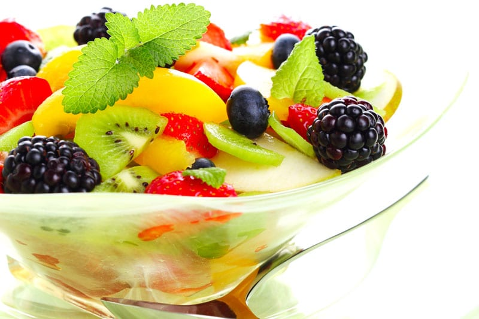
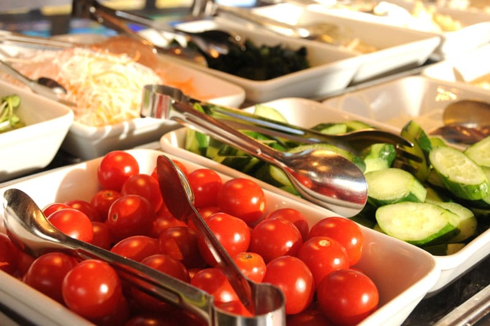
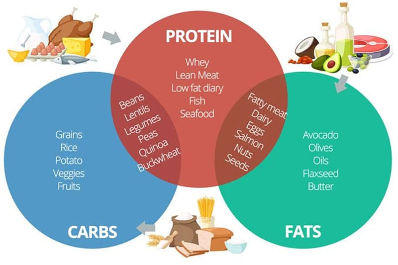
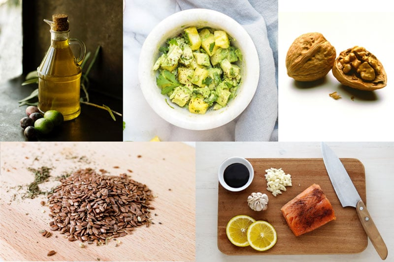
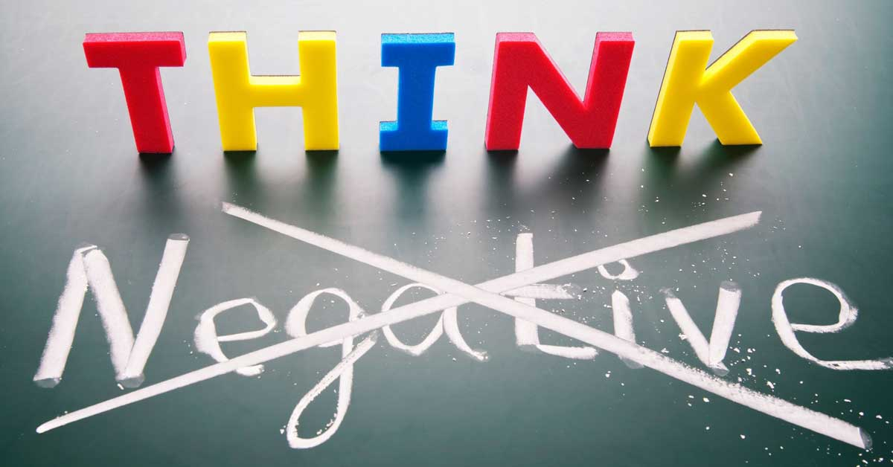
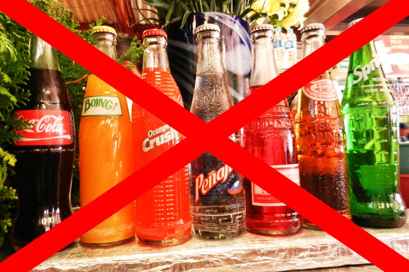
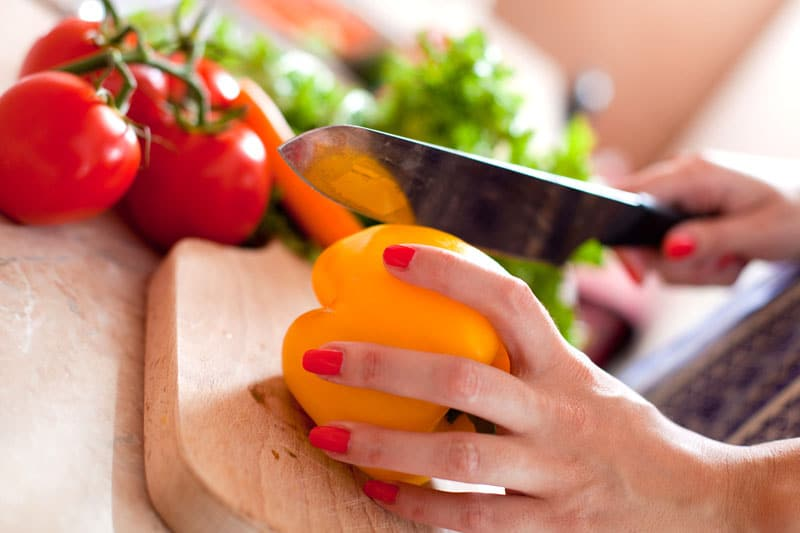
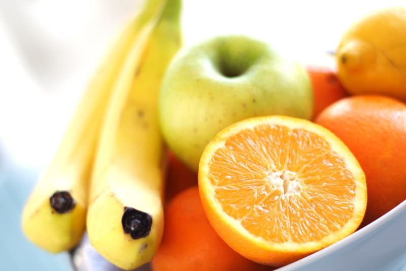
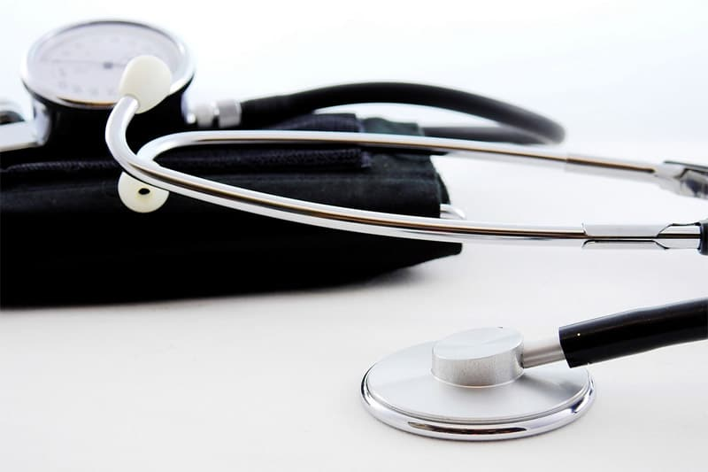
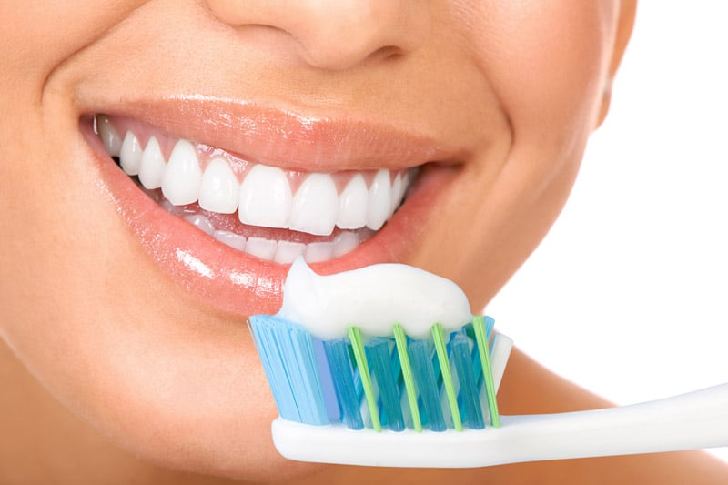

How healthy are you? Do you have a healthy diet? Do you exercise regularly? Do you drink at least 8 glasses of water a day? Do you get enough sleep every day? Do you live a healthy lifestyle?
Our body is our temple, and we need to take care of it. Do you know that over 70% of Americans are either obese or overweight?[1] That’s insane! Think of your body as your physical shell to take you through life. If you repeatedly abuse it with unhealthy habits, your shell will wear out quickly.
Life is beautiful and you don’t want to bog yourself down with unnecessary health problems. Today, your vital organs (kidney, heart, lungs, gall bladder, liver, stomach, intestines, etc.) may be working well, but they may not be tomorrow. Don’t take your good health for granted. Take proper care of your body.
Good health isn’t just about healthy eating and exercise — it’s also about having a positive mental health, a positive self-image, and a healthy lifestyle. In this article, I share 45 tips to live a healthier life. Bookmark this post and save the tips, because they are going to be vital in living a healthier life.
- Drink more water:Most of us don’t drink enough water every day. Water is essential for our bodies to function — do you know over 60% of our body is made up of water? Water is needed to carry out body functions, remove waste, and carry nutrients and oxygen around our body. Since we lose water every day through urine, bowel movements, perspiration and breathing, we need to replenish our water intake.
Furthermore, drinking more water aids in losing weight. A Health.com study carried out among overweight or obese people showed that water drinkers lose 4.5 more pounds than a control group. The researchers believe that it’s because drinking more water helps fill your stomach, making you less hungry and less likely to overeat.
The amount of water you need depends on your age, weight, humidity level, and your physical activity. There used to be a recommendation to drink 8 glasses of water, but in 2004 this recommendation was removed and healthy adults are recommended to use thirst to determine their fluid needs.Bear in mind that food intake contributes to our fluid intake too — fruits, soups, juices have high water content. How to tell if you need water: if you have dry lips, dry mouth, or little urination, you’re probably not hydrated enough. Go get some water first before you continue this article!
- Get enough sleep:When you don’t rest well, you compensate by eating more. Usually it’s junk food. Get enough rest and you don’t need to snack to stay awake. Also, lack of sleep causes premature aging, and you don’t want that.
- Meditate:Meditation quietens your mind and calms your soul. If you don’t know how to meditate, don’t worry — learn to meditate in 5 simple steps.
- Exercise:Movement is life. Research has shown that exercising daily brings tremendous benefits to our health, including increase of life span, lowering of risk of diseases, higher bone density, and weight loss. Increase activity in your life. Choose walking over transport for close distances. Climb the stairs instead of taking the lift. Join an aerobics class. Take up a sport of your liking (see tip #5).
- Pick exercises you enjoy. When you enjoy a sport, you naturally want to do it. Exercise isn’t about suffering and pushing yourself; it’s about being healthy and having fun at the same time. Adding variation in your exercises will keep them interesting.
- Work out different parts of your body. Don’t just do cardio (like jogging). Give your body a proper work out. The easiest way is to engage in sports, since they work out different muscle groups. Popular sports include basketball, football, swimming, tennis, squash, badminton, Frisbee, and more.
- Eat fruits:Fruits have a plethora of vitamins and minerals. Do you know that oranges offer more health benefits than Vitamin C pills? Satisfy your palate with these nutritious fruits: Watermelon, Apricots, Avocado (yes, avocado is a fruit!), Apple, Cantaloupe, Grapefruit, Kiwi, Guava, Papaya, Strawberries. If you intent to consume a large quantity of fruits at one go, consume fruit with some fats — such as a dressing, almond butter, olive oil, avocado — to reduce the glycemic load. More on glycemic load in tip #29.

- Eat vegetables:Like fruits, vegetables are important for good health, with many important vitamins and minerals. Eating a large quantity of vegetables is difficult due to the fiber content (tip #9), so consider juicing (tip #38) or taking a green “superfood” powder instead (tip #40).
- Watch your fiber intake:Contrary to widespread belief, high fiber does not help with constipation or smoother digestion. The more fiber you take, the bulkier your stools, the slower your colonic transit time, the more difficult it is to pass motion (which leads to constipation, piles, anal fissure). Fiber also contributes to excess gas and abdominal bloating. That’s because our body cannot digest fiber (unlike the cows’ digestive system which have four stomachs), so it simply bulks up our stools and gets passed out.
Why do so many doctors, cereal boxes, supermarket aisles, studies, etc. recommend high fiber then? This recommendation originated from a large macro-study that suggested that high fiber intake may lower risk of colon cancer. However, this did not account for factors like lifestyle and diet. Follow-up studies showed that fiber intake had very little, if any, link to colon cancer. [Harvard, School of Public Health] One possible reason is that many high-fiber foods happen to contain vitamins, minerals, and phytochemicals, that are helpful for the body. People who consume a high-fiber diet are also likely to eat less red meat, drink less alcohol, smoke less, and get regular exercise – all healthy behaviors that can reduce cancer risk.
Should we cut out fruits/vegetables then? Well, many fruits/vegetables have low fiber. Much of fruit/vegetable content is water. (The fiber content in watermelon is 0.4%, honeydew 0.8%, grapes 0.9%, and strawberry 2%. For vegetables, cucumber has 0.5% fiber, mushrooms 1%, tomato 1.2%, lettuce 1.3%, and spinach 2.2%.) You can also juice vegetables to remove fiber. The real fiber contributors are bread/pasta/wheat/grains. White bread/pasta/macaroni has 3% fiber; multi-grain bread has 12% fiber, and multi-grain cereals can have 22% or more fiber. High-fiber and whole wheat are the “in” thing today; some cereals have over 30% fiber. Also, unlike fruits and vegetables, it’s very easy to eat a lot of grains, which adds up fiber consumption. Legumes and nuts have fiber content of 8-25% but they occur in very low quantities in a daily diet. Meat/Fats/Dairy have 0 fiber.
My personal recommendation: (1) Cut down on grains/wheat; (2) Eat fruits as per normal; (3) If you want to eat a lot of vegetables, go for green powders or juicing. Avoid big salads; (4) Eat other things in moderation. A typical diet with fish/chicken (zero fiber), dairy (zero fiber), low fiber fruits/vegetables, and some rice/potatoes is already low fiber. On the other hand, when you stuff yourself with fiber, you may start noticing bloating, bulkier stools, and even piles / anal fissures — which was what happened to me. Read: Fiber and Constipation Research Study | Fiber and Colon Cancer [Harvard] | Fiber Menace | Dietary Fiber [Video] | Fiber Menace Reviews (real people who ate a high fiber diet based on doctor recommendations and suffered from constipation, bleeding, etc.)
- Pick different-colored fruits/vegs. Fruits/Vegetables with bright colors are usually high in anti-oxidants. Anti-oxidants are good for health because they remove free radicals that damage our cells. Eat fruits/vegetables of different colors: White (Bananas), Yellow (Pineapples, Mango), Orange (Orange, Papaya), Red (Apple, Strawberries, Tomatoes, Watermelon), Green (Avocado, Lettuce, Cucumber), Purple/Blue (Blackberries, Prunes). Here’s a full list under the color wheel.

- Get your macro-nutrients:Macro-nutrients are nutrients needed in bulk amounts to ensure normal growth, metabolism, and well-being of our bodies. The 3 macro-nutrients needed by humans are carbohydrates (sugar), proteins (amino acids), and fats (lipids). There are many funky diets today from high/low carb to high/low protein to high/low fat. While you are free to eat whatever you want, we need carbohydrates, proteins, and fats (known as macro-nutrients) for a healthy body. Carbs give us immediate energy. Proteins help repair tissues, heal wounds, and create enzymes and hormones. Fat is needed to build cell membranes; for blood clotting, muscle movement, and inflammation; and to absorb certain vitamins and minerals.
Be careful of fad diets. Eat a diet with a well-rounded distribution of macro-nutrients (40% carbs, 30% proteins, 30% fats, vs. being skewed to one particular group). In a study of pre-diabetics, those on a “high protein” diet (defined as 40% carb, 30% protein, 30% fat) resulted in 100% remission of pre-diabetes to normal glucose tolerance, while those on a high carb diet (defined as 55% carb, 15% protein, 30% fat) resulted in only 33% remission.

- Get your micro-nutrients:While macro-nutrients provide our bodies with the bulk energy to function, we need micro-nutrients, i.e., vitamins and minerals, to orchestrate a range of physiological functions.[5] Deficiency in any vitamin or mineral will cause dire effects on our body. Make sure to eat a range of different food to meet your micro-nutrient needs. Eating different food also ensures you have a diverse set of gut flora, which is important for optimal health. Here is a list of micro-nutrients needed by our body.
- Cut down on processed food:Processed food is not good because (a) most nutritional value is lost in the creation of these foods and (b) the added preservatives are bad for our health. Many processed foods contain a high amount of salt, which leads to higher blood pressure and heart disease. In general, the more ingredients a food has on the label (ending with ‘ite’ or ‘ate’), the more processed it is. Eating 50 grams of processed meat a day has also been found to increase the risk of colorectal cancer by 18%.Go for less processed food, such as a baked potato over chips, a fresh fruit over canned fruit, steamed fish over canned fish, or organic produce over food with high preservatives.
- Choose white meat.Cut out red meat:Red meat has been repeatedly established to increase colon cancer risk.Cut out red meat (or at the very least, limit your consumption). Substitute red meat with white meat such as chicken and fish. Increase your fish intake which seems protective against cancer. Fish also has healthy fats, a large source of omega-3 fatty acids, protein, and vitamin D.
- Go for healthy fats:As mentioned in #11, fat is a macro-nutrient and is essential to a healthy body. Fat is not the enemy — trans and saturated fats are. And trans/saturated fats are in many products today. We need healthy fats which are monounsaturated and polyunsaturated fat. Here’s the low down on fats:
- Avoid trans fat (Bad fats): Increases harmful LDL cholesterol and reduces beneficial HDL cholesterol. Common sources: Solid margarines, commercial cookies and pastries, fast-food French fries, “partially hydrogenated oil” in food ingredients.
- Limit/Avoid saturated fat (Bad fats): A diet rich in saturated fats can drive up total cholesterol, and tip the balance toward more harmful LDL cholesterol, blocking arteries. Common sources: Red meat, whole milk and other whole-milk dairy foods, cheese, coconut oil, many commercially prepared baked goods and other foods.
- Take monounsaturated fats (Good fats): Common sources: Olive oil, peanut oil, canola oil, avocados, most nuts, high-oleic safflower and sunflower oils.
- Take polyunsaturated fats (Good fats): Polyunsaturated fats are essential fats. They are required for normal body functions but your body can’t make them, so you must get them from food. These fats lower LDL and triglycerides, and boost cholesterol profile. Common sources: Salmon, mackerel, and sardines, flaxseeds, walnuts, canola oil, unhydrogenated soybean oil.

- Go barefoot walking/running. There are many benefits of barefoot walking/running, from better posture, less stress for your feet, less stress for your joints, etc. If the terrain in your neighborhood is too sharp, wear barefoot shoes. I’ve been running barefoot since May 2010 and loving it.
- Purge negativity from your life:
- Purge negative people. Positive mental health is part of a healthy life. You don’t need toxic people in your life. If you feel that a friend is overly critical or negative, let him/her go.

- Purge negativity from yourself. You don’t need negativity from yourself either. Listen to the thoughts that come up and get rid of your negative thoughts. Sometimes people eat when they are unhappy, so by staying positive, you remove an unhealthy dependency on food. One great way to remove your negativity is to brain dump when you feel frustrated. I do this with my clients, where I ask them to write out their deepest thoughts so that we can address them.
- Avoid trigger foods:Trigger foods make you go berserk and binge after you eat them. Everyone’s trigger foods are different (mine used to be doughnuts, pastries, and chips), but generally trigger foods are candy bars, chocolate, confectionery, chips, cookies, or anything with a high level of refined sugar, salt, or flour. These foods cause a blood sugar imbalance, hence triggering one to eat more. What are your trigger foods? Identify them and remove them from your diet.
- Breathe Deeply:Oxygen is vital for life. You may know how to breathe, but are you breathing properly? Most of us don’t breathe properly — we take shallow breaths and breathe to 1/3 of our lung capacity. Athletes are coached proper breathing techniques to get their best performance. A full breath is one where your lungs are completely filled, your abdomen expands, and there’s minimum movement in your shoulders.
- Improve your posture:Good posture improves your breathing (see tip #20) and makes you look more smarter and more attractive.
- Address emotional eating issues:Emotional eating is eating to fill an emotion rather than real hunger. Do you eat when you feel stressed out, down or frustrated? Do you reach out for food when you hit a block at work? Chances are, you’re emotional eating. However, emotional eating will never make you feel happy, because you’re trying to fill a void that has nothing to do with food. Food doesn’t give you love or happiness; it’s just food. Why do you reach for food when you’re down? How can you address it? Get to the root of the issue and address it.
- Choose several small meals over huge meals:This evens out your energy distribution. It’s also better for your stomach, because it doesn’t over-stretch from digesting a huge volume of food at one go, which can lead to a hiatus hernia. In general, eat when you feel hungry, and stop when you’re full (see tip #24). You don’t need to wait until official meal times before you start eating. Listen to your body and what it tells you.
- Stop eating when you feel full:Many of us rely on external cues to tell when we’re full, such as whether everyone has finished eating or whether your plate is empty. These are irrelevant: you should look at internal cues, such as whether your stomach feels full or not. Don’t eat just because there’s food on the plate. I stop when I feel about 3/4 full — if I eat till I’m totally full, I feel bloated. Use your gut as your indicator (literally).
- Live a life of purpose:Positive health starts from within! Are you living a life of meaning? Are you living in line with your purpose? Since I started living my purpose, I’ve never been happier. And you can experience that too.
- Cut down on deep-fried food:Deep fried food contains acrylamide, a potential cancer-causing chemical. According to a BBC report, an ordinary bag of crisps may contain up to 500 times more of the substance than the top level allowed in drinking water by the World Health Organisation (WHO)! When I consume oily foods, I feel sluggish. Go for food prepared using healthier methods instead, such as grilled, steamed, stir-fried, or even raw food. Reduce your intake of fast food, fries, doughnuts, chips, wedges, and deep fried food.
- Cut down on sugary food/drinks:

- Don’t drink alcohol:Like caffeine, alcohol is a diuretic. Not only that, but alcohol is repeatedly proven to have negative effects on our body and health — impacting the proper functioning of our brain, liver, lungs, and other major organs. If you drink alcohol regularly, it’s time to cut it out, or at the very least, reduce your consumption.
- Watch out on glycemic index/load:Glycemic index is an index that indicates the ability of a carbohydrate food to increase glucose level in the blood. 100 represents pure glucose, which means rapid digestion and absorption of glucose into the bloodstream. Eating food with high GI creates sugar spikes and will lead to diabetes in the long run. A GI of 55 or lower is considered low. High GI foods include mashed potato (>80), white bread (>70), white bagel (72), white rice (65), Coke (63).
However, glycemic index is only one part of the story — we need to look at the glycemic load, which tells us how high our blood sugar rises when we consume the food, depending on the amount consumed. Glycemic load is calculated by multiplying GI by the amount of carbs consumed, divided by 100. A glycemic load of 10 or below is considered low; 20 or above is considered high.
For this reason, fruits have high GI but a low glycemic load for the quantity normally consumed. For example, watermelon has a high GI of 80. But a serving of watermelon has so little carbs (6 grams) that its glycemic load is only 5. Eating a food with a low GI but in large quantity is similarly unhealthy. Macaroni has a GI of 50 but the usual serving of 180 grams will lead to a glycemic load of 24. You can lower the glycemic load of a food by pairing it with fat and protein.
- Go organic:Organic foods are foods produced without synthetic inputs such as pesticides and chemical fertilizers, do not contain genetically modified organisms, and are not processed using irradiation, industrial solvents, or chemical food additives. (Wiki) The organic movement is slowly catching on, with more supermarkets offering organic options. Organic food tends to cost more, but hey — would you rather save some money and feed your body with pesticides or pay a few extra dollars for a cleaner, healthier body?
- Prepare your meals:Whenever I can, I try to prepare my meals. When you prepare your meals, you control what goes into them, rather than choosing between sub-optimal choices in a restaurant. Get quality kitchen equipment — it will be your best investment ever. Having a blender makes it a breeze to make your fruit/vegetable juices! Having a small oven makes baking and heating food so easy.

- Learn to say no:Don’t eat just because you’re out with friends or because other people offer you food. Simply say no and say you’re not hungry if you don’t feel like eating.
- Bring a water bottle when you go out:That way, you can drink whenever you want. It saves you money and you don’t need to resort to bad alternatives like soda.
- Eat what you need:It is better to eat less and in line with your energy needs, rather than eat excessively and work off excess calorie intake through exercise. When you eat excessively, you strain your digestive system by making it digest more food than you need, and when you exercise excessively, you strain your body.
- Stop smoking:Smoking is detrimental to health, severely increases the risk of lung cancer, kidney cancer, esophageal cancer (of our gullet), heart attack, and more. Smoking “lite” cigarettes do not decrease health risks either. If you’re a smoker, quit not just for yourself, but for your family and friends. If you don’t smoke, stay that way and don’t start.

- Avoid passive smoking:Second hand smoking (breathing in air from smokers) causes many of the same long-term diseases as direct smoking (Wiki). Did you know? According to the CDC (Centers for Disease Control and Prevention), there is no risk-free level of passive smoking; even brief exposure can be harmful to health. Get away from smokers and avoid cigarette smoke where you can.
- Have healthy snacks:If you’re hungry at work, eat healthy snacks like fruits, vegetable juices, and yogurts. These are nutritional and don’t give you that sugar rush. Have them readily available so that you can get a munch and stop when you have your fill. Stay away from cookies and candy bars.

- Juice:Juicing is a great way to get vitamins and nutrients from fruits/vegetables without munching through a large amount of fiber (see tip #9). I recommend to juice vegetables. For fruits, juice at most 1-2 fruit servings as juicing fruits lead to sugar spikes. You can also go for green powders (see tip #40), which contains the nutrients of many power vegetables in one scoop.
- Go for regular checkups:Many diseases don’t show up in terms of symptoms until it is too late. Blood tests for blood sugar, vitamins and minerals, along with urine tests are standard tests you can take. More elaborate tests like mammograms (for women), PAP smear (for women), colonoscopy, etc. should be done at the recommended intervals. If the test results are not optimal, it means that you can quickly take corrective action. If they are great, that’s fantastic and you can have a peace of mind.

- Supplement your diet:
- Vitamins/Minerals. Even when we eat healthily, there will be times when we lack certain vitamins/minerals. For example, foods with certain vitamins/minerals may be uncommon in your diet. A vegan diet, while conferring certain health benefits, lacks essential vitamins and minerals like Vitamin B12 and Omega 3 (EPA/DHA). This can be resolved by taking in supplements. Understand the gaps in your diet (health checkups will let you know if you are deficient — see tip #39) and try to address them via your diet. If not possible, take supplements to address these gaps.
- Probiotics. If you suffer from slow colonic transit time or your gut flora has been affected from taking anti-biotics in the past (you’ll know if your stools are hard, slow to come out, or big — ideally stools should be small, soft, and very easy/quick to pass), taking a daily probiotics during / right before or after a meal will help. Different brands work for different people, so get a good brand and alternate until you find one that works for you.
- Green powders. As mentioned in tip #8, vegetables contain many vitamins and minerals for good health. However, it’s unrealistic and unhealthy (see tip #9) to munch through so much vegetable a day, much less source them from different supermarkets. This is where green powders come in: they are a blend of antioxidants, enzymes, amino acids, essential fatty acids, and phytonutrients, sourced from a range of vegetables. This is the easiest way to get a high serving of vegetables along with their antioxidant/nutritious content on a regular basis. Research and get a good brand as there are knock-offs with synthetic ingredients.
- Experiment:The best way to know what works for you is to experiment. Rather than subscribe yourself to one diet, try different foods and see how your body responds. Most importantly — research and tweak your diet based on what you learn. I enjoy reading health journals, because this way I can read the information directly from the source vs. through news articles or editorials which often serve an agenda.
- Get out more often:If you have a 9-5, chances are you spend much of your time holed up in the office and not a lot of time going out and having fun. During weekends, you’re probably busy with work or running errands. Make a point to go out with your friends at least once a week. Get some sun. Go out and have a change of environment. It’ll be great for your body and soul.
- Exercise good dental hygiene:Not only does good hygiene make you a lot more desirable, but it is linked to better health. Brush your teeth twice a day, rinse your mouth after each meal, and floss your teeth at night.

- Join classes: Dance classes, aerobics classes, tennis classes, ballroom dancing, scuba diving, and wakeboarding courses are all places to start. Going there also lets you socialize with a new group of people.
- Hang out with healthy people. You’re the average of the 5 people you spend the most time with, so the more time you spend around healthy people, the better it is. Dine with people who are health conscious and get workout buddies. It makes healthy living more fun!
Hang out with healthy people. You’re the average of the 5 people you spend the most time with, so the more time you spend around healthy people, the better it is. Dine with people who are health conscious and get workout buddies. It makes healthy living more fun!